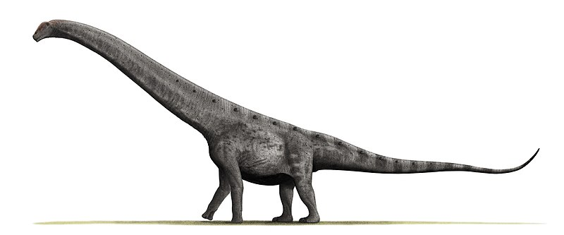

Algunos de los dinosaurios mas emblematicos de Argentina
-

Giganotosaurus
Giganotosaurus carolinii fue una especie de dinosaurio terópodo carcarodontosáurido que vivió hace 99.6 a 95 millones de años atrás, a finales del Período Cretácico, en lo que hoy es Argentina. Es uno de los miembros más grandes y representativos de su familia, además de ser uno de los dinosaurios carnívoros más largos de los que se tiene conocimiento.
Ver mas... -

Argentinosaurus
Argentinosaurus huinculensis es la única especie conocida del género extinto Argentinosaurus de dinosaurio saurópodo titanosauriano que vivió a mediados del período Cretácico, entre hace 97 y 93,5 millones de años, en lo que hoy es América del Sur. Es uno de los animales terrestres más grandes de los que se tiene conocimiento actualmente.
Ver mas... -

Amagarsaurus
Amargasaurus cazaui es la única especie conocida del género extinto Amargasaurus de dinosaurio saurópodo dicreosáurido, que vivió a principios del período geológico Cretácico, hace aproximadamente 130 millones de años, en el Barremiense, en lo que hoy es Sudamérica.
Ver mas... -
Carnotaurus
Carnotaurus (gr. "Toro carnívoro") es un dinosaurio terópodo abelisáurido que vivió hace entre 72 y 69,9 millones de años, en el Cretácico superior en lo que hoy es Sudamérica. Era un dinosaurio bípedo de constitución ligera, pero de cuerpo robusto. A lo largo de su espalda, desde la cabeza a la cola, su piel estaba cubierta de placas óseas, y al frente tenia 2 pequeños cuernos.
Ver mas... -
Titanosaurus
Patagotitan un género de dinosaurio saurópodo titanosauriano. Vivió a mediados del período Cretácico, hace aproximadamente 101 millones de años, en lo que es hoy es el sur de América del Sur. Sus restos se hallaron en el centro-norte de la provincia argentina del Chubut, en el centro de la Patagonia, Argentina.
Ver mas...